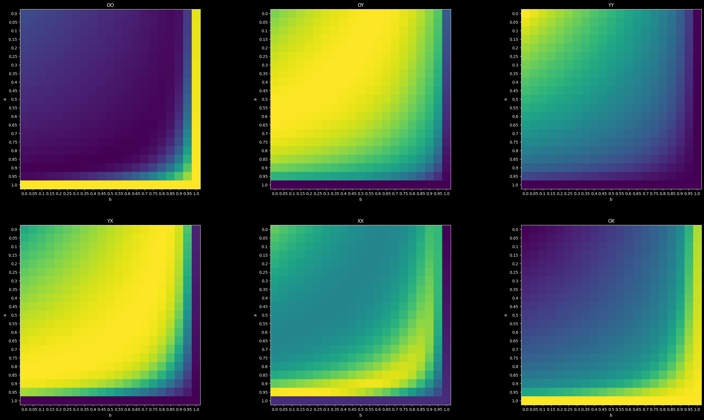
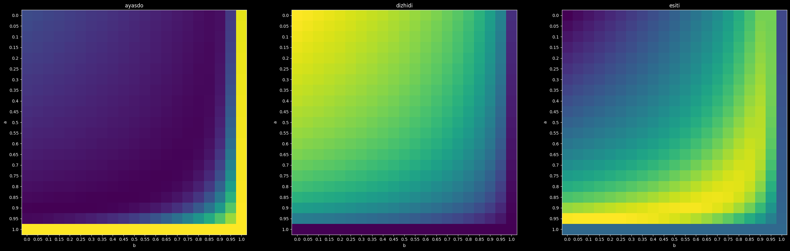

Experiment Simulation Weights#
[1]:
%load_ext autoreload
%autoreload 2
[2]:
from pyAdasi.sim_utils import GenderSystem, Gender, Chromo, generate_gender_func, apg, dist_inverse, generate_distribution_func, get_reverse_index
import numpy as np
import pandas as pd
from matplotlib import pyplot as plt
[3]:
system = GenderSystem(False, Chromo.X, Chromo.Y, Chromo.O, extended=True)
determine_gender = generate_gender_func(system)
distribution_func = generate_distribution_func(system)
[4]:
get_reverse_index(system)
[4]:
{OO: {(OO, OO): 4, (OO, OY): 2, (OO, OX): 2, (OY, OX): 1, (OX, OX): 1},
OY: {(OO, OY): 2,
(OO, YY): 4,
(OO, YX): 2,
(OY, YX): 1,
(OY, OX): 1,
(YY, OX): 2,
(YX, OX): 1},
YY: {(OY, YX): 1, (YY, YX): 2, (YX, YX): 1},
YX: {(OY, YX): 1,
(OY, XX): 2,
(OY, OX): 1,
(YY, YX): 2,
(YY, XX): 4,
(YY, OX): 2,
(YX, YX): 2,
(YX, XX): 2,
(YX, OX): 1},
XX: {(YX, YX): 1,
(YX, XX): 2,
(YX, OX): 1,
(XX, XX): 4,
(XX, OX): 2,
(OX, OX): 1},
OX: {(OO, YX): 2,
(OO, XX): 4,
(OO, OX): 2,
(OY, YX): 1,
(OY, XX): 2,
(OY, OX): 1,
(YX, OX): 1,
(XX, OX): 2,
(OX, OX): 2}}
[5]:
input_prob = np.array([[0.5], [0], [0.35], [0], [0.15], [0]])
[6]:
results = np.ndarray((0, 8))
[7]:
pos_values = np.arange(0, 1.05, 0.05).round(2)
[8]:
results = np.ndarray((0, 8))
for a in pos_values:
for b in pos_values:
curr = input_prob.copy()
prev = curr.copy()
curr = distribution_func(prev)
for i in range(2, 51):
aterm = distribution_func(curr)
bterm = distribution_func(prev)
cterm = dist_inverse(bterm)
next = a * aterm + (1 - a) * b * bterm + (1 - a) * (1 - b) * cterm
# next = a * aterm + (1 - a) * bterm
prev = curr
curr = next
results = np.vstack((results, np.hstack((np.array([a, b]), curr.T[0]))))
[9]:
l = ["a", "b"]
l.extend(apg)
pdf = pd.DataFrame(results, columns = l)
[10]:
pdf[Gender.D] = [0] * len(pdf)
pdf[Gender.E] = [0] * len(pdf)
pdf[Gender.A] = [0] * len(pdf)
for g in apg:
pdf[determine_gender(g)] += pdf[g]
[11]:
apg
[11]:
[OO, OY, YY, YX, XX, OX]
[12]:
gene_maps = {}
gender_maps = {}
for g in apg:
gene_maps[g] = np.array(pdf[g]).reshape(len(pos_values), len(pos_values))
for r in [Gender.D, Gender.E, Gender.A]:
gender_maps[r] = np.array(pdf[r]).reshape(len(pos_values), len(pos_values))
[13]:
fig, axs = plt.subplots(2, 3, figsize=(32, 18))
axs = axs.reshape(-1)
for i in range(len(apg)):
axs[i].imshow(gene_maps[apg[i]])
axs[i].set_xticks(np.arange(len(pos_values)), labels=pos_values)
axs[i].set_yticks(np.arange(len(pos_values)), labels=pos_values)
axs[i].set_xlabel("b")
axs[i].set_ylabel("a")
# plt.setp(axs[i].get_xticklabels(), rotation=60, ha="right", rotation_mode="anchor")
# for u in range(len(pos_values)):
# for v in range(len(pos_values)):
# text = axs[i].text(v, u, round(gene_maps[apg[i]][u, v], 2),
# ha="center", va="center", color="w")
axs[i].title.set_text(f"{apg[i]}")
plt.show()

[14]:
genders = [Gender.A, Gender.D, Gender.E]
[15]:
fig, axs = plt.subplots(1, 3, figsize=(32, 18))
axs = axs.reshape(-1)
for i in range(3):
axs[i].imshow(gender_maps[genders[i]])
axs[i].set_xticks(np.arange(len(pos_values)), labels=pos_values)
axs[i].set_yticks(np.arange(len(pos_values)), labels=pos_values)
axs[i].set_xlabel("b")
axs[i].set_ylabel("a")
# plt.setp(axs[i].get_xticklabels(), rotation=60, ha="right", rotation_mode="anchor")
# for u in range(len(pos_values)):
# for v in range(len(pos_values)):
# text = axs[i].text(v, u, round(race_maps[races[i]][u, v], 2),
# ha="center", va="center", color="w")
axs[i].title.set_text(f"{genders[i]}")
plt.show()

[16]:
pdf
[16]:
| a | b | OO | OY | YY | YX | XX | OX | dizhidi | esiti | ayasdo | |
|---|---|---|---|---|---|---|---|---|---|---|---|
| 0 | 0.0 | 0.00 | 0.177124 | 0.155474 | 0.189084 | 0.146144 | 0.178434 | 0.153742 | 0.344557 | 0.478319 | 0.177124 |
| 1 | 0.0 | 0.05 | 0.173973 | 0.159150 | 0.182149 | 0.152533 | 0.174776 | 0.157419 | 0.341298 | 0.484729 | 0.173973 |
| 2 | 0.0 | 0.10 | 0.170836 | 0.162548 | 0.175405 | 0.158720 | 0.171224 | 0.161267 | 0.337953 | 0.491211 | 0.170836 |
| 3 | 0.0 | 0.15 | 0.167708 | 0.165680 | 0.168827 | 0.164712 | 0.167785 | 0.165288 | 0.334507 | 0.497784 | 0.167708 |
| 4 | 0.0 | 0.20 | 0.164583 | 0.168554 | 0.162389 | 0.170514 | 0.164475 | 0.169484 | 0.330944 | 0.504473 | 0.164583 |
| ... | ... | ... | ... | ... | ... | ... | ... | ... | ... | ... | ... |
| 436 | 1.0 | 0.80 | 0.392000 | 0.051380 | 0.001000 | 0.028070 | 0.110640 | 0.416900 | 0.052380 | 0.555610 | 0.392000 |
| 437 | 1.0 | 0.85 | 0.392000 | 0.051380 | 0.001000 | 0.028070 | 0.110640 | 0.416900 | 0.052380 | 0.555610 | 0.392000 |
| 438 | 1.0 | 0.90 | 0.392000 | 0.051380 | 0.001000 | 0.028070 | 0.110640 | 0.416900 | 0.052380 | 0.555610 | 0.392000 |
| 439 | 1.0 | 0.95 | 0.392000 | 0.051380 | 0.001000 | 0.028070 | 0.110640 | 0.416900 | 0.052380 | 0.555610 | 0.392000 |
| 440 | 1.0 | 1.00 | 0.392000 | 0.051380 | 0.001000 | 0.028070 | 0.110640 | 0.416900 | 0.052380 | 0.555610 | 0.392000 |
441 rows × 11 columns
[17]:
pdf.iloc[pdf[Gender.E].add(pdf[Gender.D]).sub(pdf[Gender.A]).sort_values(ascending=False).index]
[17]:
| a | b | OO | OY | YY | YX | XX | OX | dizhidi | esiti | ayasdo | |
|---|---|---|---|---|---|---|---|---|---|---|---|
| 382 | 0.9 | 0.20 | 0.112539 | 0.147831 | 0.054474 | 0.214825 | 0.188211 | 0.282129 | 0.202305 | 0.685165 | 0.112539 |
| 383 | 0.9 | 0.25 | 0.112601 | 0.145987 | 0.052609 | 0.212967 | 0.190773 | 0.285063 | 0.198596 | 0.688803 | 0.112601 |
| 381 | 0.9 | 0.15 | 0.112673 | 0.149590 | 0.056216 | 0.216329 | 0.185717 | 0.279485 | 0.205805 | 0.681531 | 0.112673 |
| 380 | 0.9 | 0.10 | 0.112952 | 0.151273 | 0.057855 | 0.217559 | 0.183297 | 0.277063 | 0.209128 | 0.677920 | 0.112952 |
| 384 | 0.9 | 0.30 | 0.112980 | 0.144083 | 0.050602 | 0.210632 | 0.193320 | 0.288383 | 0.194685 | 0.692334 | 0.112980 |
| ... | ... | ... | ... | ... | ... | ... | ... | ... | ... | ... | ... |
| 423 | 1.0 | 0.15 | 0.392000 | 0.051380 | 0.001000 | 0.028070 | 0.110640 | 0.416900 | 0.052380 | 0.555610 | 0.392000 |
| 422 | 1.0 | 0.10 | 0.392000 | 0.051380 | 0.001000 | 0.028070 | 0.110640 | 0.416900 | 0.052380 | 0.555610 | 0.392000 |
| 421 | 1.0 | 0.05 | 0.392000 | 0.051380 | 0.001000 | 0.028070 | 0.110640 | 0.416900 | 0.052380 | 0.555610 | 0.392000 |
| 420 | 1.0 | 0.00 | 0.392000 | 0.051380 | 0.001000 | 0.028070 | 0.110640 | 0.416900 | 0.052380 | 0.555610 | 0.392000 |
| 440 | 1.0 | 1.00 | 0.392000 | 0.051380 | 0.001000 | 0.028070 | 0.110640 | 0.416900 | 0.052380 | 0.555610 | 0.392000 |
441 rows × 11 columns
[18]:
pdf_reduced = pdf[(pdf['a'] > 0.1) & (pdf['a'] < 0.9)]
[19]:
pdf_diagonal = pdf_reduced[pdf_reduced['a'] == pdf_reduced['b']]
[20]:
possible = pdf_diagonal.iloc[pdf_diagonal[Gender.E].add(pdf_diagonal[Gender.D]).sub(pdf_diagonal[Gender.A]).argmax()]
[21]:
possible
[21]:
a 0.700000
b 0.700000
OO 0.114849
OY 0.151982
YY 0.057359
YX 0.215738
XX 0.181743
OX 0.278322
dizhidi 0.209341
esiti 0.675803
ayasdo 0.114849
Name: 308, dtype: float64
[22]:
possible = possible.drop(['a', 'b', Gender.D, Gender.E, Gender.A])
[23]:
pdf_lim = pdf.drop(['a', 'b', Gender.D, Gender.E, Gender.A], axis = 1)
[24]:
pdf.iloc[pdf_lim.sub(possible).pow(2).sum(axis = 1).sort_values().index]
[24]:
| a | b | OO | OY | YY | YX | XX | OX | dizhidi | esiti | ayasdo | |
|---|---|---|---|---|---|---|---|---|---|---|---|
| 308 | 0.70 | 0.70 | 0.114849 | 0.151982 | 0.057359 | 0.215738 | 0.181743 | 0.278322 | 0.209341 | 0.675803 | 0.114849 |
| 347 | 0.80 | 0.55 | 0.113794 | 0.151593 | 0.057635 | 0.216745 | 0.182611 | 0.277629 | 0.209228 | 0.676985 | 0.113794 |
| 328 | 0.75 | 0.65 | 0.114292 | 0.150996 | 0.056663 | 0.215542 | 0.183264 | 0.279243 | 0.207659 | 0.678050 | 0.114292 |
| 288 | 0.65 | 0.75 | 0.115575 | 0.151471 | 0.056339 | 0.214332 | 0.182202 | 0.280080 | 0.207810 | 0.676615 | 0.115575 |
| 365 | 0.85 | 0.40 | 0.113345 | 0.151419 | 0.057754 | 0.217176 | 0.182978 | 0.277327 | 0.209174 | 0.677481 | 0.113345 |
| ... | ... | ... | ... | ... | ... | ... | ... | ... | ... | ... | ... |
| 422 | 1.00 | 0.10 | 0.392000 | 0.051380 | 0.001000 | 0.028070 | 0.110640 | 0.416900 | 0.052380 | 0.555610 | 0.392000 |
| 421 | 1.00 | 0.05 | 0.392000 | 0.051380 | 0.001000 | 0.028070 | 0.110640 | 0.416900 | 0.052380 | 0.555610 | 0.392000 |
| 439 | 1.00 | 0.95 | 0.392000 | 0.051380 | 0.001000 | 0.028070 | 0.110640 | 0.416900 | 0.052380 | 0.555610 | 0.392000 |
| 429 | 1.00 | 0.45 | 0.392000 | 0.051380 | 0.001000 | 0.028070 | 0.110640 | 0.416900 | 0.052380 | 0.555610 | 0.392000 |
| 440 | 1.00 | 1.00 | 0.392000 | 0.051380 | 0.001000 | 0.028070 | 0.110640 | 0.416900 | 0.052380 | 0.555610 | 0.392000 |
441 rows × 11 columns